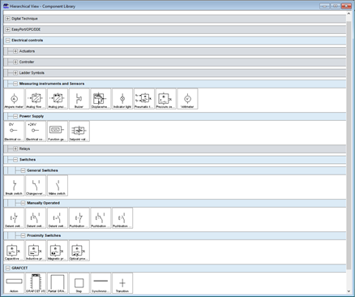
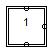
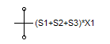
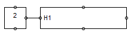
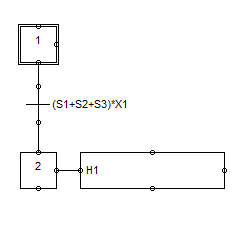
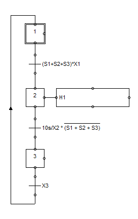
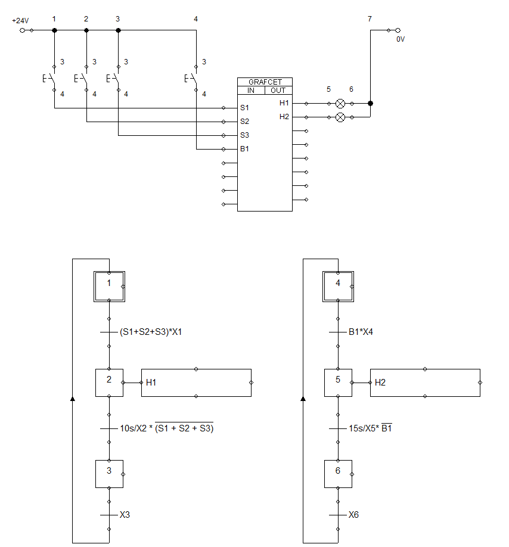

Hùng xin chào và cảm ơn bạn đã ghé trang này, Trang này được tạo ra với mục đích ôn tập Grafcet & PLC của Thầy Phương.
Hùng sẽ cố gắng tạo ra nội dung bổ ích và hữu ích nhất có thể để giúp bạn hiểu rõ hơn về hai chủ đề này. Ngoài ra, tui sẽ luôn sẵn sàng hỗ trợ bạn nếu có bất kỳ câu hỏi hoặc thắc mắc nào liên quan đến đề tài này.
Hùng hy vọng rằng trang này sẽ giúp bạn ôn tập và nâng cao kiến thức của mình về Grafcet & PLC, và cũng giúp bạn chuẩn bị tốt hơn cho các bài kiểm tra tuần sau.
Bước khởi tạo này đảm bảo rằng hệ thống sẽ bắt đầu từ một trạng thái ban đầu cụ thể và không phải là một trạng thái ngẫu nhiên nào đó. Bước khởi tạo thường được biểu diễn bằng một trạng thái đặc biệt, thường là trạng thái đầu tiên của Grafcet.
Cái này Thanh Anh bổ sung thêm,Hùng chưa rõ lý do. thà thừa hơn thiếu và nó cũng không ảnh hướng tới Grafcet. 😉
Nếu phát hiện sai, lỗi về bài làm hay giao diện hãy nhắn tin cho Hùng, Hùng sẽ xử lý và khắc phục sớm nhất.
Đây là bài làm cá nhân Hùng nên sẽ có thể khó hiểu hoặc sai xót, Nếu có bất kì thắc mắc gì chủ động hỏi Hùng, Hùng sẽ cố gắng giải thích cho bạn.
Trang chỉ ở giao diện tối giản để giảm dung lượng cũng như khi tải trang sẽ nhẹ và nhanh hơn.
Trang đạt chuẩn bảo mật HTTPS.
Nếu bạn có góp ý gì về trang hãy nhắn tin cho Hùng tại Messenger dưới góc phải hoặc tại đây Messenger.
Ở thư viện các thành phần (Component Library) ta chỉ cần các thành phần sau là có thể làm Grafcet cơ bản:
Tại vì đèn E1, E2, E3 sử dụng chung Q0.0 và E4 là Q0.1
Khi tác động S1 hoặc S2 hoặc S3 thì đèn H1 sáng và tắt sau 10s nếu S1,S2,S3 không bị tác động nữa.
Khi tác động B1 thì đèn H2 sáng và tắt sau 15s nếu B1 không bị tác động nữa.
Trước tiên ta thêm các nút nhấn, đèn và Grafcet I/O
Bài này ta có input như sau: S1,S2,S3,B1
và output là H1, H2.
Tạo bước khởi tạo.
Sau đó khi tác động S1,S2,S3 thì đèn H1 sẽ sáng ở đây S1,S2,S3 là điều kiện chuyển tiếp
S1,S2,S3 có thể hiểu là 1 khối vì vậy sẽ ở trong ngoặc, và [OR] hay [AND] thì tuỳ vào [+] hay [*].
X1 có nghĩa là [Step1] mà muốn qua [Step 2] tiếp theo thì [Step 1] trước đó phải hoạt động.
H1 sẽ là hành động của bước tiếp theo [Step 2]
Sau đó ta nối các thành phần với nhau như hình dưới đây
Tiếp theo nếu ngưng tác động S1,S2,S3 thì sau 10s đèn H1 sẽ tắt
Ở bước này sẽ phải có bộ đếm thời gian 10s [Timer] Vậy điều kiện để qua [Step 3] sẽ là 10s và Step trước đó [Step 2]
Sau đó [Step 3] có nhiệm vụ là quay trở lại Bước khởi tạo [Step 1]
Tiếp theo Grafcet Đèn H2, cũng như mạch Đèn H1 đèn H2 cũng tương tự chỉ khác là sau 15s mới tắt.
!Như cách vẽ này sẽ là tách làm 2 mạch Grafcet của H1 và H2 nên sẽ tiếp tục sử dụng Bước khởi tạo ở [Step 4].
Và cuối cùng hoàn thiện sẽ được như sau.
Qua phần TIA PORTAL
Mình chỉ làm mạch H1 vì mạch H2 cũng tương tự H1 chỉ khác chỗ S1,S2,S3 thay thành B1.
Tại vì đèn E1, E2, E3 sử dụng chung Q0.0 và E4 là Q0.1
Khi tác động S1 hoặc S2 hoặc S3 thì đèn H1 sáng và tắt sau 10s nếu S1,S2,S3 không bị tác động nữa.
Khi tác động B1 đủ 5s thì đèn H2 sáng và tắt sau 15s nếu B1 không bị tác động nữa.
Do Đề 2 giống với đề Đề 1 nên mình chỉ tóm ngắn gọn lại.
Khi tắc động B1 đủ 5s thì mới sáng đèn H2.
S1 có nhiệm vụ bật hệ thống chống trộm và S2 có nhiệm vụ tắt hệ thống
Khi bật hệ thống sẽ chưa hoạt động mà phải chờ 10s, sau khi đủ 10s hệ thống chống trộm đã được kích hoạt.
Sau đó nếu có trộm mở cửa ( B1 hoặc B2 hoặc B3 ) thì hệ thống sẽ báo động ( P1 và Chuông ) liên tục cho tới khi cửa được đóng lại, hệ thống sẽ báo động ( P1 sáng và Chuông sẽ kêu tít tít ) và tự tắt sau 30s.
Input: B1, B2, B3, S1, S2
Output: P1, Chuông